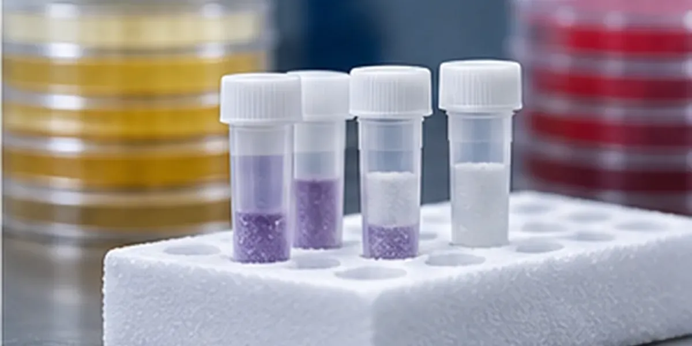
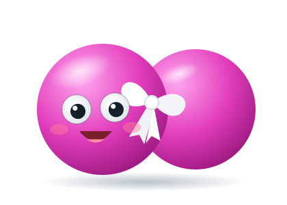
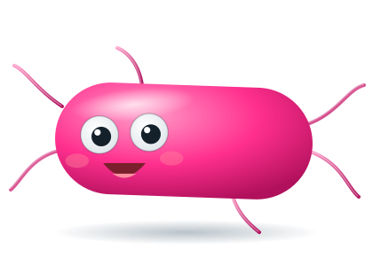
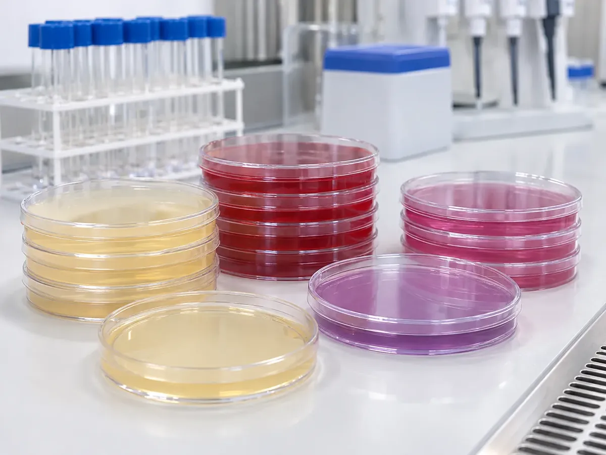

Cepas qualitativas
Controle positivo e negativo de meios de cultura, kits e provas bioquímicas.
Micro-organismos rastreáveis à ATCC, liofilizados e prontos para uso, para controlar meios, kits e métodos da rotina do laboratório.


Busque pelo micro-organismo ou pela referência que você já tem. O resultado mostra a mesma cepa na WDCM, ATCC, NCTC, DSM, CIP e outras coleções.
Equivalências conforme o catálogo de cepas de referência da WDCM (World Data Centre for Microorganisms) , conferidas com o catálogo da DSMZ e as listas dos bancos de cultura. Nomes reclassificados aparecem com o nome antigo e o atual. Confirme sempre a designação no certificado da cepa.
Bactérias, leveduras e fungos, incluindo as cepas de desafio citadas na Farmacopeia.

Controle positivo e negativo de meios de cultura, kits e provas bioquímicas.

Inóculo com contagem conhecida para promoção de crescimento e testes de recuperação.
A escolha da cepa e do formato segue o ensaio, a norma e o procedimento do laboratório.
Promoção de crescimento, controle de kit, validação de método.
Farmacopeia, norma ou procedimento interno que você segue.
Qualitativa ou quantitativa, e o volume de uso. Nosso suporte técnico ajuda na escolha.
Conte o ensaio e a referência que você segue. A RBio indica as cepas e o formato.